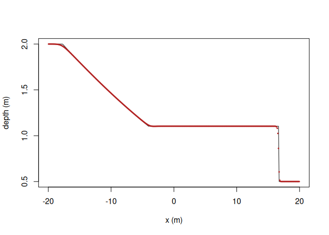
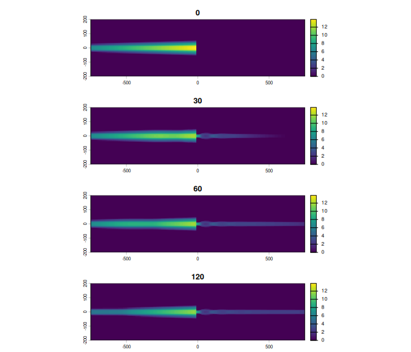

Prototype two-dimensional shallow water (Saint-Venant) solver for R, on regular grids read from GDAL rasters. The question behind it: how much real physical simulation can we do from R? Answer so far: a validated, well-balanced, mass-conserving finite volume solver with wetting and drying is about 400 lines of C++ behind a cpp11 interface, and it runs a 40 minute storm over 90,000 cells of real terrain in about three minutes on four cores.
Install from GitHub:
remotes::install_github("hypertidy/shallows")The package began in hypertidy/playproj and moved here with its history. playproj keeps a browser viewer that runs a JavaScript port of the same kernel live in a page (shallows.html, src/core/shallows.js, src/core/terrain.js); on the same inputs the port and this package agree to 1e-12 or better.
inst/parity/parity.json holds that agreement: small terrain and solver problems as plain data with this package’s results, written by inst/parity/make-parity.R. The tests here check the package still reproduces the file, and the JavaScript tests in playproj must reproduce a copy of it. Regenerate it only when results are meant to change.
What it solves
h_t + (hu)_x + (hv)_y = R
(hu)_t + (hu^2 + g h^2 / 2)_x + (huv)_y = -g h z_x - g n^2 u |u| / h^(1/3)
(hv)_t + (huv)_x + (hv^2 + g h^2 / 2)_y = -g h z_y - g n^2 v |u| / h^(1/3)depth h, velocity (u, v), bed z, rain R, Manning n.
- Finite volume on the raster grid; HLL approximate Riemann solver.
- Hydrostatic reconstruction (Audusse, Bouchut, Bristeau, Klein and Perthame 2004): a lake at rest stays at rest to round-off, including around dry islands, and depth stays non-negative, so cells wet and dry without special cases. This is the scheme family used by FullSWOF.
-
order = 1: piecewise constant, forward Euler.order = 2: MUSCL with minmod onh,u,vandh + z, the centred bed source term, Heun (SSP-RK2) in time. - Kurganov-Petrova velocity desingularisation for very thin films.
- Time step from the CFL condition plus a bed-slope acceleration term, so thin films on steep slopes cannot overshoot (without it the depth clipping diagnostic shows mass being created on real terrain).
- Semi-implicit Manning friction; rain as a source; each edge “wall” or “open”.
- Bookkeeping: every run reports volume, cumulative rain, cumulative flux through the edges, the mass budget error and any depth clipping. On the real DEM the budget closes to about 1e-12 relative and clipping is zero.
- OpenMP across rows and columns of the flux sweeps.
-
sw_run_r()is the same first-order scheme in plain vectorised R, as readable documentation and a cross-check (the C++ kernel matches it to 1e-16).
Examples
A Stoker dam break: 2 m of water behind a dam at x = 0, 0.5 m in front, on a flat frictionless bed 1 cell deep, compared with the analytic solution after 4 seconds.
library(shallows)
nx <- 400; dx <- 0.1
x <- (seq_len(nx) - 0.5) * dx - nx * dx / 2
h0 <- matrix(ifelse(x < 0, 2, 0.5), 1, nx)
s <- sw_state(z = matrix(0, 1, nx), h = h0, dx = dx)
run <- sw_run(s, times = 4, bc = "open")
run
#> shallows run: 1 x 400 cells, 1 frames to t = 4 s, 788 steps
#> max |mass budget error| (relative): 1.78e-16
exact <- dambreak_stoker(x, t = 4, hl = 2, hr = 0.5)
mean(abs(run$h[[1]][1, ] - exact$h))
#> [1] 0.002599192
plot(exact$x, exact$h, type = "l", xlab = "x (m)", ylab = "depth (m)")
points(x, run$h[[1]][1, ], pch = 19, cex = 0.3, col = "firebrick")
A lake at rest around a dry island stays at rest: the scheme is well balanced, so the surface and momentum do not move off round-off.
z <- sw_generate("island", nx = 60, dx = 50, as = "matrix")
s <- sw_state(z, eta = 0, dx = 50)
run <- sw_run(s, times = c(60, 600))
wet <- run$h[[2]] > 0
range((run$h[[2]] + z)[wet])
#> [1] -3.552714e-15 3.996803e-15
max(abs(run$hu[[2]]), abs(run$hv[[2]]))
#> [1] 5.849737e-13
run$diag[c("time", "steps", "rel_budget_error")]
#> time steps rel_budget_error
#> 1 60 92 -1.412397e-15
#> 2 600 916 -1.412397e-15Validation
inst/examples/validation.R writes validation.png and validation.csv.
| test | what it checks | result |
|---|---|---|
| Stoker dam break (wet bed) | shock speed and middle state | L1 depth error 0.0067 m at 800 cells (order 2); about first order convergence, as expected with a shock |
| Ritter dam break (dry bed) | wet/dry front on a flat bed | 0.0064 m at 800 cells (order 2) |
| Lake at rest with islands | well balancing | surface and momentum stay at 1e-16 |
| Thacker planar surface in a paraboloid (moving shoreline, 3 periods) | wetting and drying over time | relative L1 depth error 0.13, 0.036, 0.011 at 50, 100, 200 cells (order 2, rate about 1.8); first order is much worse (0.33 at 200) |
| x vs y sweep | transposed problem gives transposed answer | exact |
| mass budget | all of the above, plus rain with open edges | relative error below 1e-11 everywhere |
tests/testthat runs reduced versions of these.
Real terrain: rain on McRobies Gully
inst/examples/mcrobies-storm.R reads a 1.2 km square of the Tasmania 2 m DEM (source.coop COG, EPSG:28355) through GDAL /vsicurl/, aggregates it to 4 m, rains 60 mm/h on it for 30 minutes, then lets it drain for 10. It writes the depth at every minute as a multi-layer GeoTIFF with the DEM’s CRS and extent, the maximum depth, speeds, and the water budget.
For illustration only: not survey, engineering or planning data. The bed is bare terrain with uniform roughness, no infiltration, no drains or culverts, so water ponds behind road fill that in reality has pipes through it.
Survey: shallow water from R
-
In R:
rivr(CRAN) does 1D gradually varied and unsteady open channel flow (MacCormack and method of characteristics) for prismatic channels. A search found no CRAN package for 2D shallow water over terrain; hydrodynamics in R usually means writing inputs for an external engine and reading its rasters back. - External engines R can drive (write inputs, run, read outputs): LISFLOOD-FP (C++, local inertial approximation, widely used for flood inundation), FullSWOF (C++, same hydrostatic reconstruction family as here), ANUGA (Python, unstructured triangles, reachable through reticulate), Clawpack/GeoClaw (Fortran/Python, adaptive refinement, tsunamis and storm surge), Basilisk (C, adaptive quadtrees), TELEMAC-2D, HEC-RAS 2D (closed source), and GPU codes such as TRITON and SERGHEI. Python’s landlab has an overland flow component (de Almeida inertial scheme).
- What this adds: no external binary, grids straight from terra/GDAL with CRS kept, results back as rasters, a budget on every run, and code small enough to read and extend.
Terrain: extract a real place or generate one
sw_extract(lon, lat, size, res) gives a bed for any place as a square local metre grid (UTM, or polar stereographic beyond 80 S and 84 N), read through GDAL straight from cloud COGs. The finest source that covers a cell wins and gaps are filled from the next: the Tasmania 2 m DEM (LIST), then Copernicus GLO-30, then GEBCO for the sea floor (GLO-30 sea cells at 0 m take GEBCO where it is below sea level). The result has a z layer and a source layer saying which source each cell came from, and goes straight into sw_from_rast().
bed <- sw_extract(147.45, -43.05, size = 40000, res = 200) # Storm Bay
s <- sw_from_rast(bed, eta = 0)sw_generate() makes beds you can reason about: plane, valley, bowl, shelf, island and reservoir (a valley with a dam, intact or breached), with optional fractal roughness (noise = list(amp, scale, octaves, gain, seed)). The hash and noise are written so the same shape, size and seed give the same bed in R and in the browser (src/core/terrain.js in hypertidy/playproj), to 1e-13. sw_fill_lake() and sw_fill_sea() start water standing at a level in a connected hollow or in everything open to the edge.
z <- sw_generate("reservoir", nx = 300, ny = 80, dx = 5, breach = 20)
lake <- sw_fill_lake(sw_generate("reservoir", nx = 300, ny = 80, dx = 5, as = "matrix"),
i0 = 40, j0 = 100, level = 14)
s <- sw_from_rast(z, h = lake)
run <- sw_run(s, times = c(0, 30, 60, 120), bc = "open")
run
#> shallows run: 80 x 300 cells, 4 frames to t = 120 s, 1488 steps
#> max |mass budget error| (relative): 2.78e-15
terra::plot(sw_rast(run, "h"), nc = 1, range = c(0, max(lake)))
Earth rotation
sw_state(f = ) takes a Coriolis parameter (s^-1), one value or a matrix; sw_coriolis() gives it from latitudes or, per cell, from a SpatRaster’s CRS. The rotation is applied exactly (Strang half turns around the flow step), so an inertial oscillation keeps its speed to rounding and turns clockwise in the northern hemisphere. Checks: a Kelvin wave stays trapped against the right-hand wall (relative L2 0.09 at order 2, 10 km cells), and geostrophic adjustment converges with the grid (surface error 4.5, 2.0, 0.8% at 10, 5, 2.5 km). Edges can be "periodic" (in pairs) for channels and doubly periodic basins.
Limits and next steps
- Cartesian grid in a projected CRS only. Coriolis is in; ocean basin scales still need spherical metric terms.
- Explicit time stepping: steps are set by the fastest, deepest water, so a 2 m grid costs about eight times a 4 m grid per simulated minute.
- No infiltration (Green-Ampt would be next), no land-cover roughness map (the solver already takes a Manning matrix), no inflow hydrograph boundary.
- Outputs are matrices and SpatRasters; writing them as meshcore surfaces or streaming frames to the browser viewer are natural next steps.
References
- Audusse, E., Bouchut, F., Bristeau, M.-O., Klein, R. and Perthame, B. (2004). A fast and stable well-balanced scheme with hydrostatic reconstruction for shallow water flows. SIAM J. Sci. Comput. 25, 2050-2065.
- Kurganov, A. and Petrova, G. (2007). A second-order well-balanced positivity preserving central-upwind scheme for the Saint-Venant system. Commun. Math. Sci. 5, 133-160.
- Thacker, W. C. (1981). Some exact solutions to the nonlinear shallow-water wave equations. J. Fluid Mech. 107, 499-508.
- Delestre, O. et al. (2013). SWASHES: a compilation of shallow water analytic solutions for hydraulic and environmental studies. Int. J. Numer. Meth. Fluids 72, 269-300.
- Delestre, O., Darboux, F., James, F., Lucas, C., Laguerre, C. and Cordier, S. (2017). FullSWOF: full shallow-water equations for overland flow. J. Open Source Softw. 2(20), 448.
Browser viewer
../shallows.html (with ../src/core/shallows.js) runs the same scheme in the browser, ported line for line from src/swe.cpp, with depth, speed, water budget, probe and section views. Scenarios: generated beds (dam break, rain on rough hills, island wave, rotating basin, make your own from any shape and seed), real beds (McRobies Gully, Storm Bay as extracted by sw_extract()), any GeoTIFF you open, and the analytic benchmarks. ../test/check-shallows.mjs and ../test/check-terrain.mjs check the port and the generator against this package.
Code of Conduct
Please note that the shallows project is released with a Contributor Code of Conduct. By contributing to this project, you agree to abide by its terms.